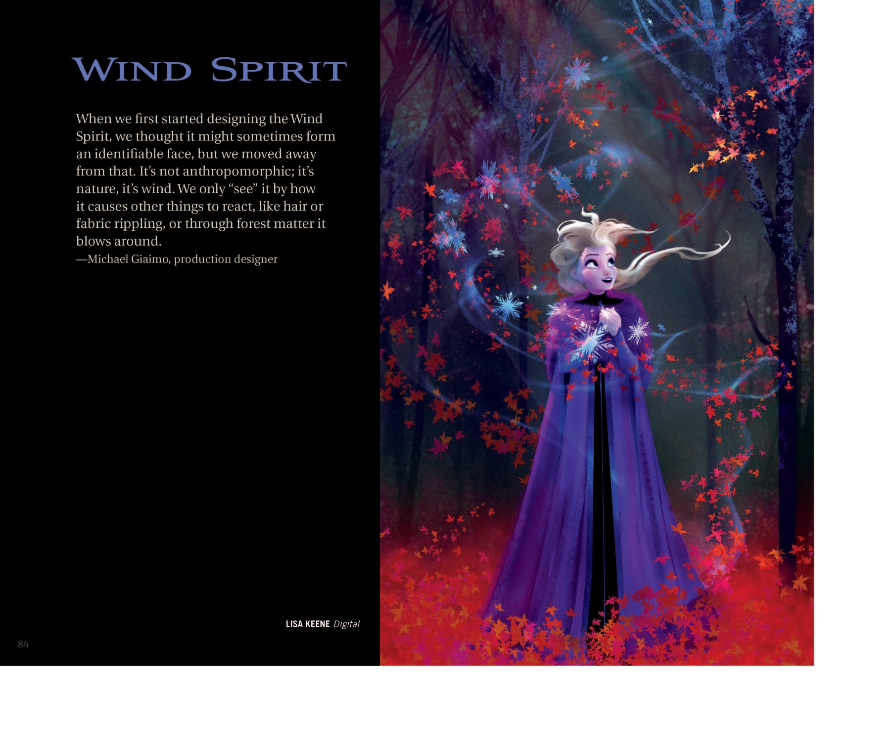
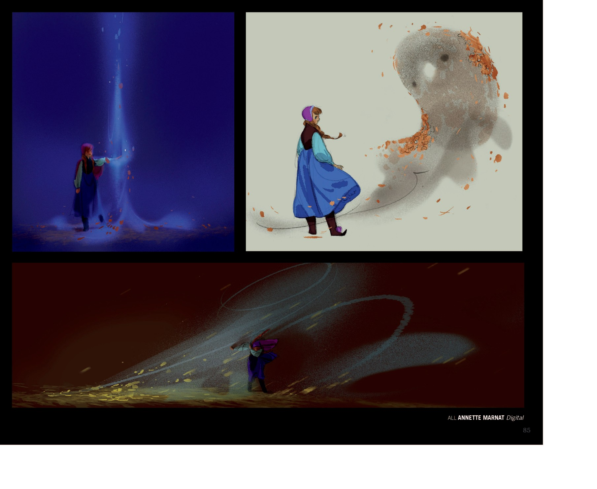
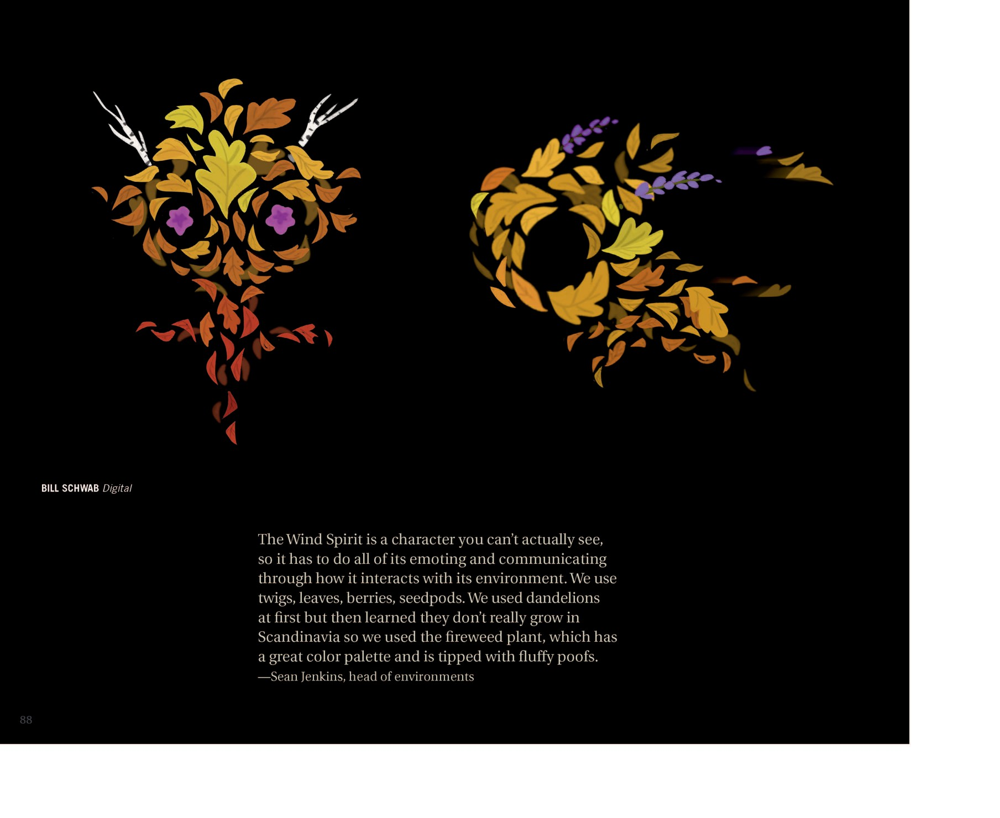
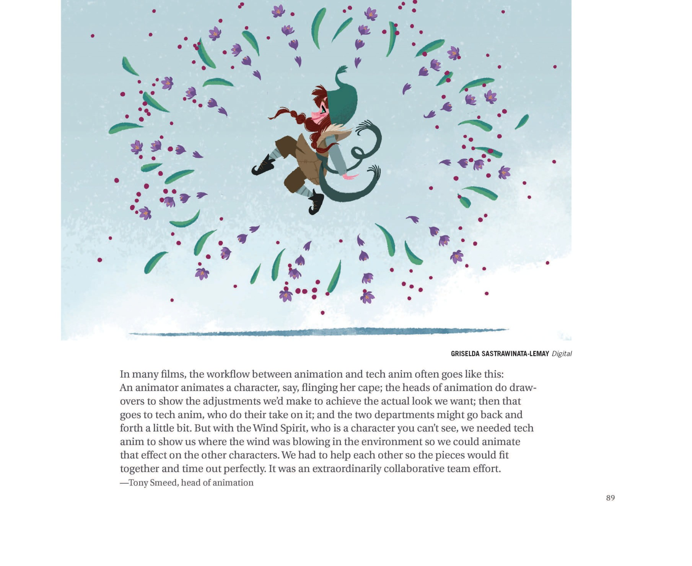

📖 设定集 · F2设定集
F2 图版 · 风之灵
F2 官方设定集图版 · p088–p093
5
本卷页数
🎨
设定集
中/英
双语
🖼️ F2 官方设定集 · 原书图版
F2 图版 · 风之灵
《The Art of Frozen II》（Jessica Julius, Chronicle Books 2019） p088–p093
5
图版
p088–p093
原书页码
原书
扫描原图
笔记
逐页图注
🍃 风之灵（Gale）小节的剩余设定页：以尘卷风为灵感的视觉测试、风团与角色的互动研究——「少即是多」，用最少的颗粒物传达风。
🌪️ Wind Spirit（p088–p093）

章节待考（应为"Wind Spirit"或"Magic Spirits"小节，章节起始页）
1. "风之灵"（F2设定集原页）

章节待考（"Wind Spirit"或"Magic Spirits"小节）
1. "全部由 ANNETTE MARNAT 数字绘"（F2设定集原页）

章节待考（"Wind Spirit"小节；右下角 logo "Clownbird animation jr."）
1. 动画师 Mark Henn：风之灵是我职业生涯中一次独特的挑战。电影人希望它更自然、非拟人化，所以不能有脸，但又要传递情感。风本身看不见，但你能看见它对物体与环境的影响。我们带着这个思路做了多次测试，使用树叶、树枝等物来构成表达情感的形状与动作。我们与雪宝、Sven 都有活泼的时刻，与艾莎也有安静的时刻——风绕着（F2设定集原页）

章节待考（"Wind Spirit"小节）
1. "BILL SCHWAB 数字绘"（F2设定集原页）

章节待考（"Wind Spirit"小节）
1. "GRISELDA SASTRAWINATA-LEMAY 数字绘"（F2设定集原页）
💡 图注说明
本页全部图版为《The Art of Frozen II》（Jessica Julius, Chronicle Books 2019）原书扫描（原图复制，未压缩），图注（中文标题 + 要点首句）逐页取自官方设定集中文笔记，点击图片可查看原尺寸扫描。
📌 本页要点
你正在阅读《设定集》卷的「F2 图版 · 风之灵」。本页由电影正典、官方设定集与官方小说综合梳理，可作为该主题的速查入口；右侧目录可快速跳转到本页各小节。